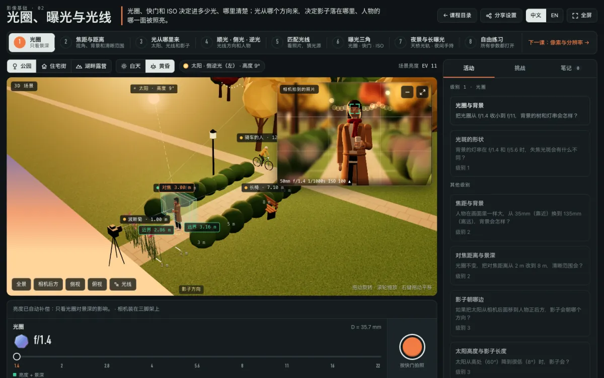
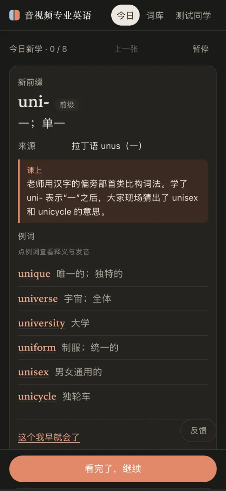
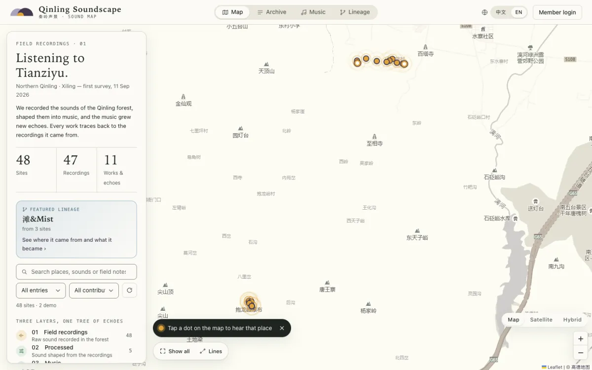
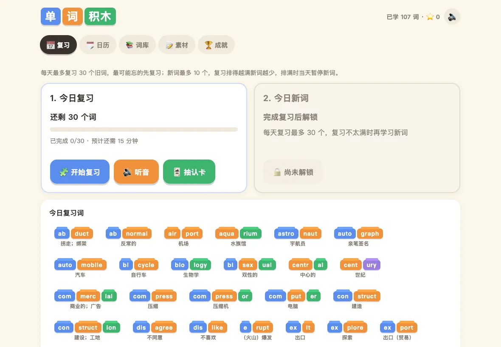
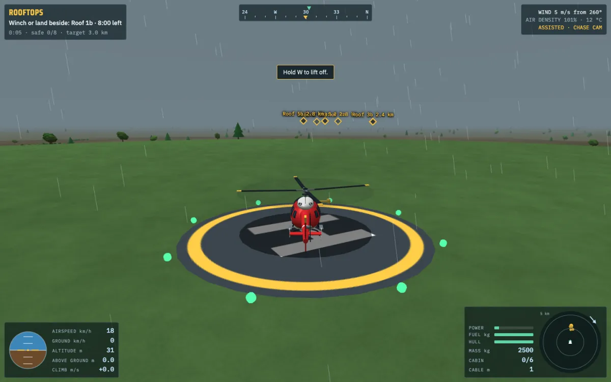

影像与声音课件Image & Sound Lessons
把相机、镜头、麦克风和扬声器一件件拆开来讲的交互课件。学生在 3D 场景里转光圈、换焦距、挪太阳，马上就能看到景深、曝光和影子怎么变。
先一次只动一个参数，到最后一关才把所有参数一起打开。
我不是程序员。这里的东西，都是我用自然语言和 AI 一起做出来的：给学生的课件和学习平台，给儿子积木的学习工具和游戏。每一个都在真实使用。这一页放的是它们的样子、为什么要做，以及做的过程中想明白的事。
I'm not a programmer. Everything here was built by talking it through with AI: lessons and learning platforms for my students, learning tools and games for my son Jim. All of them are in real use. This page shows what they look like, why they exist, and what building them taught me.
为我的课和研究团队做的工具。
Tools for my classes and my research team.

把相机、镜头、麦克风和扬声器一件件拆开来讲的交互课件。学生在 3D 场景里转光圈、换焦距、挪太阳，马上就能看到景深、曝光和影子怎么变。
先一次只动一个参数，到最后一关才把所有参数一起打开。

音视频技术专业英语的课后练习。每天复习到期的词根，再学几个新的；每张卡片都附着“课上”那一刻：老师怎么类比的，同学们怎么猜出来的。
卡片上写的不只是释义，还有课堂上发生过的事。学生记住的往往是那个瞬间。

一门课的班级社区。同学可以匿名提问、分享作品，也可以给“下节课想听什么”投票，票数第一的话题下节课一定讲。
让学生决定一部分课讲什么。

我们在秦岭录下的森林声音，一个个标在地图上。原始录音、加工过的声音、用它们做成的音乐连成一棵“来龙去脉”的树。
每一件作品，都能找回它出自哪一段录音。
为儿子积木做的学习工具和游戏。他是唯一的用户，也是最严格的测试员。
Learning tools and games for my son Jim, the only user and the toughest tester.

看懂、练几题，再用自己的话把道理讲给 AI 小伙伴“铁蛋”听。比如：一艘积木船的每一块都换过了，它还是原来那艘船吗？
积木的推理常常比题目更深，却被判“没通过”。所以我把“过 / 不过”改成了一级一级往上走。

四个小模块放在一起：每日打卡、每天三道动脑的数学题、把单词拆成词根来拼的“单词积木”，还有哲学实验室。换 iPad 或电脑都能接着学。
单词也像积木：前缀、词根、后缀，各是一块。
积木自己构想的派对游戏，配乐是他用 Suno 做的三首歌。我和 AI 帮他把它重建成能完整玩下来的版本：派对杯、九个冒险关卡、扭蛋机和衣帽间。
代码注释写到他自己也能改：想加一条赛道，照着抄一行就行。

一款没有武器的救援游戏：在暴雨、稀薄的高原空气、浓烟和夜色里飞行，用绞车把人救上来。底层是真实的飞行物理，也可以打开辅助。
每周一篇：这一周我和学生们拿 AI 做了什么。
A weekly log of what my students and I built with AI.
这些项目大多在课堂和家里使用，没有公开入口。想试用、想看代码，或者只是想聊聊，欢迎来信：jihangyurec@gmail.com
Most of these live in classrooms and at home, without a public link. If you'd like to try one, see the code, or just talk, write to me.